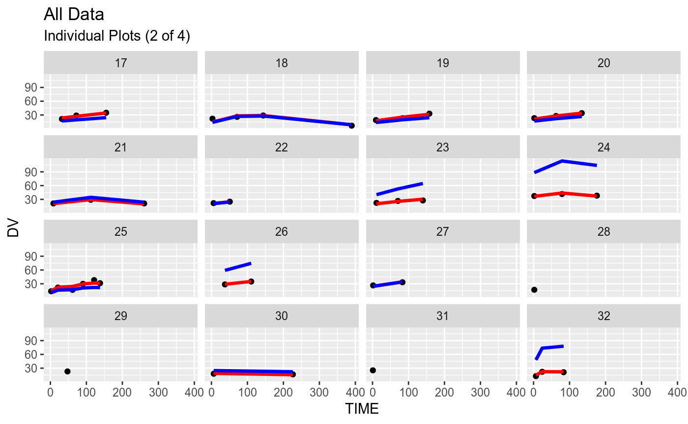
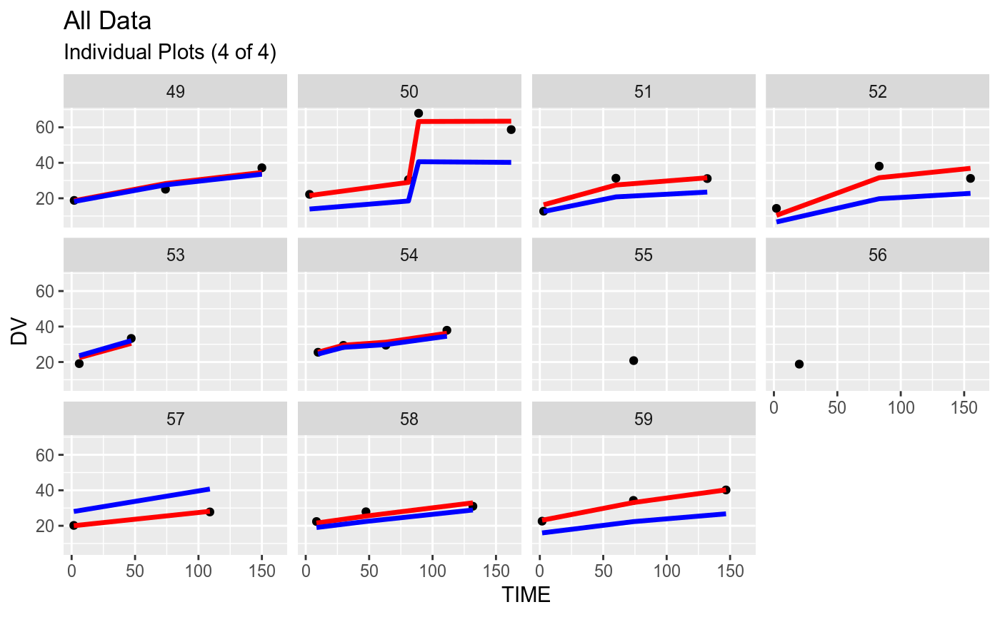
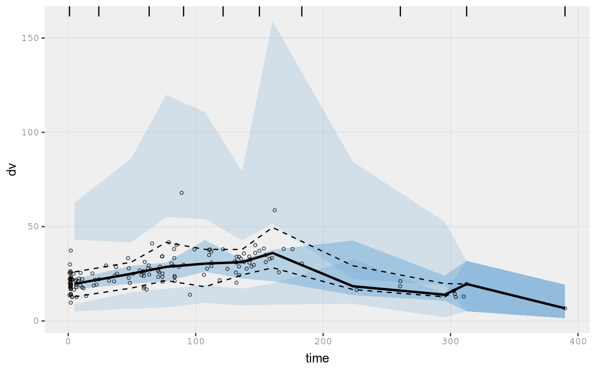
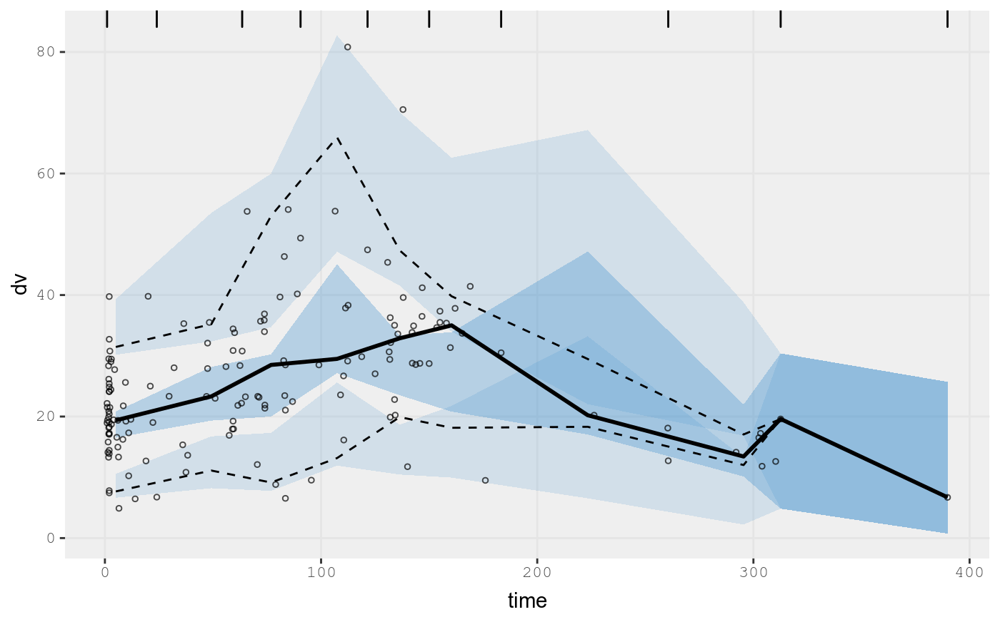

Example Model: Phenobarbatol with covariances
2019-04-23
Source:vignettes/addingCovariances.Rmd
addingCovariances.Rmdnlmixr
Adding Covariances between random effects
You can simply add co-variances between two random effects by adding the effects together in the model specification block, that is eta.cl+eta.v ~. After that statement, you specify the lower triangular matrix of the fit with c().
An example of this is the Phenobarbital data:
## Load Phenobarb data
library(nlmixr)
## To allow nlmixr to reload runs without large run times
## To run the actual models on your system, take the save options off.
options(nlmixr.save=TRUE,
nlmixr.save.dir=system.file(package="nlmixr"));
pheno <- function() {
ini({
tcl <- log(0.008) # typical value of clearance
tv <- log(0.6) # typical value of volume
## var(eta.cl)
eta.cl + eta.v ~ c(1,
0.01, 1) ## cov(eta.cl, eta.v), var(eta.v)
# interindividual variability on clearance and volume
add.err <- 0.1 # residual variability
})
model({
cl <- exp(tcl + eta.cl) # individual value of clearance
v <- exp(tv + eta.v) # individual value of volume
ke <- cl / v # elimination rate constant
d/dt(A1) = - ke * A1 # model differential equation
cp = A1 / v # concentration in plasma
cp ~ add(add.err) # define error model
})
}
fit <- nlmixr(pheno, pheno_sd, "saem")
#> Loading model already run (/home/matt/R/x86_64-pc-linux-gnu-library/3.5/nlmixr/nlmixr-pheno-pheno_sd-saem-4e1d75f610dfc7b582af6cceee46bc57.rds)
fit
#> ── nlmixr SAEM([3mODE[23m); [2m[3mOBJF by Gaussian Quadrature (n.nodes=3, n.sd=1.6)[23m[22m fit
#> OBJF AIC BIC Log-likelihood Condition Number
#> gauss3_1.6 721.8749 1018.746 1037.006 -503.3729 7.462652
#>
#> ── Time (sec; fit$time): ──────────────────────────────────────────────────
#> saem setup optimize covariance table
#> 20.157 0.255346 1.5e-05 1.7e-05 0.012
#>
#> ── Population Parameters (fit$parFixed or fit$parFixedDf): ────────────────
#> Parameter Est. SE %RSE
#> tcl typical value of clearance -5 0.075 1.5
#> tv typical value of volume 0.347 0.0536 15.4
#> add.err residual variability 2.84
#> Back-transformed(95%CI) BSV(CV%) Shrink(SD)%
#> tcl 0.00674 (0.00582, 0.0078) 52.8 1.68%
#> tv 1.42 (1.27, 1.57) 40.8 1.18%
#> add.err 2.84
#>
#> Covariance Type (fit$covMethod): linFim
#> Correlations in between subject variability (BSV) matrix:
#> cor__eta.v.eta.cl
#> 0.986
#> Full BSV covariance (fit$omega)
#> or correlation (fit$omegaR; diagonals=SDs)
#> Distribution stats (mean/skewness/kurtosis/p-value) available in $shrink
#>
#> ── Fit Data (object fit is a modified tibble): ────────────────────────────
#> # A tibble: 155 x 16
#> ID TIME DV EVID PRED RES IPRED IRES IWRES eta.cl eta.v
#> <fct> <dbl> <dbl> <int> <dbl> <dbl> <dbl> <dbl> <dbl> <dbl> <dbl>
#> 1 1 2 17.3 0 17.5 -0.198 18.4 -1.13 -0.397 -0.0731 -0.0516
#> 2 1 112. 31 0 27.9 3.08 29.6 1.39 0.489 -0.0731 -0.0516
#> 3 2 2 9.7 0 10.5 -0.799 12.5 -2.76 -0.973 -0.215 -0.171
#> # … with 152 more rows, and 5 more variables: cl <dbl>, v <dbl>, ke <dbl>,
#> # cp <dbl>, A1 <dbl>
suppressWarnings(plot(fit))


#> geom_path: Each group consists of only one observation. Do you need to
#> adjust the group aesthetic?
#> geom_path: Each group consists of only one observation. Do you need to
#> adjust the group aesthetic?
#> geom_path: Each group consists of only one observation. Do you need to
#> adjust the group aesthetic?
#> geom_path: Each group consists of only one observation. Do you need to
#> adjust the group aesthetic?
#> geom_path: Each group consists of only one observation. Do you need to
#> adjust the group aesthetic?
#> geom_path: Each group consists of only one observation. Do you need to
#> adjust the group aesthetic?
#> geom_path: Each group consists of only one observation. Do you need to
#> adjust the group aesthetic?
#> geom_path: Each group consists of only one observation. Do you need to
#> adjust the group aesthetic?
#> geom_path: Each group consists of only one observation. Do you need to
#> adjust the group aesthetic?
#> geom_path: Each group consists of only one observation. Do you need to
#> adjust the group aesthetic?
#> geom_path: Each group consists of only one observation. Do you need to
#> adjust the group aesthetic?
#> geom_path: Each group consists of only one observation. Do you need to
#> adjust the group aesthetic?
#> geom_path: Each group consists of only one observation. Do you need to
#> adjust the group aesthetic?
#> geom_path: Each group consists of only one observation. Do you need to
#> adjust the group aesthetic?
#> geom_path: Each group consists of only one observation. Do you need to
#> adjust the group aesthetic?
#> geom_path: Each group consists of only one observation. Do you need to
#> adjust the group aesthetic?
#> geom_path: Each group consists of only one observation. Do you need to
#> adjust the group aesthetic?
#> geom_path: Each group consists of only one observation. Do you need to
#> adjust the group aesthetic?
library(ggplot2)
## A traditional VPC
vpc(fit, show=list(obs_dv=TRUE))
#> Compiling VPC model...
#> done
#> done (0.32 sec)
## A prediction-corrected VPC
vpc(fit, pred_corr = TRUE, show=list(obs_dv=TRUE))
#> Compiling VPC model...
#> done
#> Compiling Pred (for pcVpc) model...done
#> done (0.43 sec)